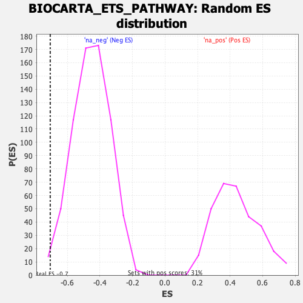

| | | Dataset | DE_genes |
| Phenotype | NoPhenotypeAvailable |
| Upregulated in class | na_neg |
| GeneSet | BIOCARTA_ETS_PATHWAY |
| Enrichment Score (ES) | -0.70555615 |
| Normalized Enrichment Score (NES) | -1.5553166 |
| Nominal p-value | 0.00723589 |
| FDR q-value | 0.09508457 |
| FWER p-Value | 0.744 |
Table: GSEA Results Summary
 Fig 1: Enrichment plot: BIOCARTA_ETS_PATHWAY
Fig 1: Enrichment plot: BIOCARTA_ETS_PATHWAY
Profile of the Running ES Score & Positions of GeneSet Members on the Rank Ordered List
| PROBE | GENE SYMBOL | GENE_TITLE | RANK IN GENE LIST | RANK METRIC SCORE | RUNNING ES | CORE ENRICHMENT | | 1 | RBL1 | | | 866 | 1.013 | -0.0177 | No |
| 2 | CSF1R | | | 1994 | 0.328 | -0.0782 | No |
| 3 | HDAC2 | | | 4062 | 0.066 | -0.2094 | No |
| 4 | ETV3 | | | 6991 | -0.110 | -0.3947 | No |
| 5 | E2F1 | | | 7340 | -0.140 | -0.4120 | No |
| 6 | HRAS | | | 9295 | -0.347 | -0.5253 | No |
| 7 | DDX20 | | | 9657 | -0.397 | -0.5336 | No |
| 8 | ETS2 | | | 10744 | -0.559 | -0.5828 | No |
| 9 | CSF1 | | | 11758 | -0.753 | -0.6198 | No |
| 10 | HDAC5 | | | 11997 | -0.804 | -0.6048 | No |
| 11 | NCOR2 | | | 12066 | -0.817 | -0.5783 | No |
| 12 | SIN3A | | | 12106 | -0.832 | -0.5494 | No |
| 13 | ETS1 | | | 14521 | -1.805 | -0.6373 | Yes |
| 14 | E2F4 | | | 14648 | -1.916 | -0.5729 | Yes |
| 15 | SIN3B | | | 15330 | -3.073 | -0.5008 | Yes |
| 16 | JUN | | | 15456 | -4.705 | -0.3309 | Yes |
| 17 | FOS | | | 15471 | -8.771 | 0.0000 | Yes |
Table: GSEA details [plain text format]

Fig 2: BIOCARTA_ETS_PATHWAY: Random ES distribution
Gene set null distribution of ES for BIOCARTA_ETS_PATHWAY